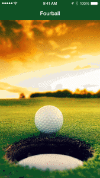
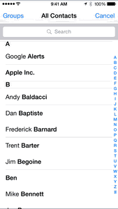
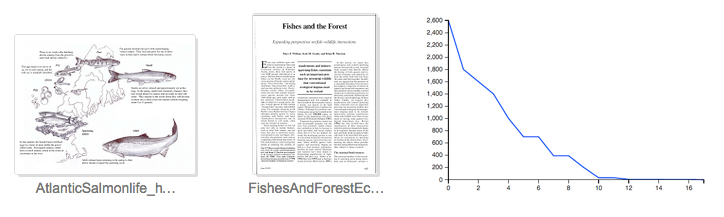

"React Components: A Staging and Demonstration Repo"
"Overtone Wurlitzer: Livecoding A Chris Staples Song in Clojure" Your browser doesn't support HTML5 audio.
"Fourball: Hybrid mobile app to coordinate same-day golf with your buddies"  
"The Salmon Game: Why do salmon lay so many eggs?" 
"The Circle Game: Computational modeling and simulation from table-top to laptop"
"Overtone Controller: Clojurescript App to Control Overtone" Your browser doesn't support HTML5 audio.